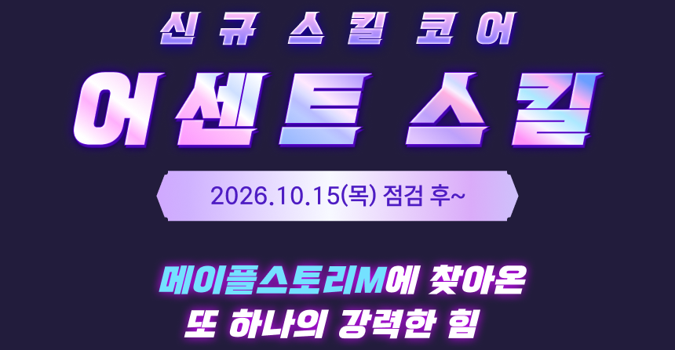
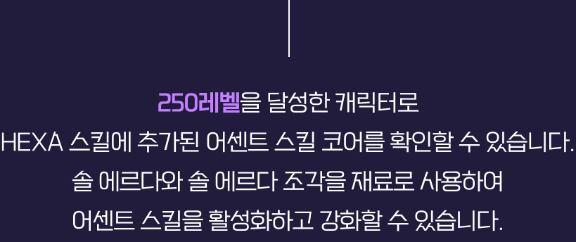

메이플스토리M 어센트 스킬, HEXA 스킬에서 확인하는 곳과 해금 조건·재료 정리
메이플스토리M 10주년을 맞아 나온 업데이트로 HEXA 스킬에 어센트 스킬 코어가 추가됐어요. 어디서 열고 뭐가 필요한지 헷갈리는 분, 특히 250레벨 안팎에서 코어가 보이는지 궁금하신 분께 맞춘 글이에요.
저는 공식 10주년 이벤트 페이지와 게임메카·샌드이코노미 보도를 먼저 읽어 봤고, 인게임 체험은 아직 못 했어요. 기준 시점은 2026년 10월 20일입니다.
- 확인하는 곳은 HEXA매트릭스 창의 HEXA 스킬 탭이에요. 공식 소개에 어센트 스킬 코어가 HEXA 스킬에 추가됐다고 적혀 있어요.
- 해금 조건은 공식 문구가 '250레벨 달성'과 '[6차] 새로운 힘 퀘스트 완료' 둘로 달라서, 내 화면에서 확인이 필요해요.
- 필요한 재료는 솔 에르다와 솔 에르다 조각이고, 이 둘로 어센트 스킬을 활성화하고 강화합니다.
- 효과는 넓은 범위의 적을 공격하는 기술이고, 보스전에서는 재사용 대기시간 없이 최대 3회까지 쓸 수 있다고 보도됐어요.
재료 소모량이나 강화 최대 레벨, 데미지 같은 숫자는 이번에 확인한 공식 이벤트 페이지와 보도에는 없어서 수치 표는 넣지 못했어요. 대신 인게임에서 직접 볼 체크리스트를 맨 아래에 붙여 놨습니다.

공식 10주년 이벤트 페이지의 어센트 스킬 소개 타이틀이에요.
이미지 출처: 메이플스토리M 10주년 이벤트 페이지 (저작권 넥슨) · 네이버 본문엔 받아서 재업로드 권장
메이플스토리M 어센트 스킬은 어디서 확인하나요?
어센트 스킬은 HEXA 스킬에 새로 추가된 '신규 스킬 코어'라서, HEXA매트릭스 창의 HEXA 스킬 탭에서 코어를 확인하는 구조예요.
공식 페이지는 이 기능을 '신규 스킬 코어 어센트 스킬', '메이플스토리M에 찾아온 또 하나의 강력한 힘'이라는 문구로 소개해요. 게임메카는 오리진 스킬에 이어 추가된 광범위 공격 스킬이라고 설명했는데요, 그래서 어센트 스킬을 찾으실 때는 HEXA매트릭스 창의 HEXA 스킬 탭부터 열어 보시는 게 가장 빨라요.
HEXA 스킬 탭에서 어센트 스킬 코어가 놓인 모습이에요.
제 HEXA 스킬 화면에서 어센트 스킬 코어는 〔바로 보였어요 / 아직 보이지 않았어요〕.
어센트 스킬 활성화와 강화에는 무엇이 필요한가요?
활성화와 강화 재료는 솔 에르다와 솔 에르다 조각 두 가지예요.
공식 그림 문구에 '솔 에르다와 솔 에르다 조각을 재료로 사용하여 어센트 스킬을 활성화하고 강화할 수 있다'고 적혀 있거든요. 한 번 열면 끝이 아니라 활성화로 시작해서 같은 재료로 강화까지 이어지는 구조라는 뜻이에요.
재료 앞에서 이럴 땐 이렇게
· 필요 개수가 화면에 보이면 → 솔 에르다와 조각이 각각 몇 개씩 드는지 먼저 적어 두시면 좋아요. 지금으로선 내 화면에 뜬 값이 가장 확실한 기준이거든요.
· 재료가 모자라 보이면 → 둘 중 어느 쪽이 모자란지부터 가르는 게 좋아요. 공식 문구에 두 재료가 나란히 적혀 있어서, 한쪽만 모으기보다 수량을 같이 보는 편이 안전해요.
· 코어 자체가 안 보이면 → 재료 이전에 아래 해금 조건부터 살펴보시면 됩니다.
코어 상세 화면에서 솔 에르다와 솔 에르다 조각을 확인하는 모습이에요. 필요 개수가 보인다면 이 화면에서 바로 확인할 수 있어요.
활성화 화면에서 더 모자랐던 재료는 〔솔 에르다 / 솔 에르다 조각 / 둘 다 충분했어요〕.
어센트 스킬의 보스전 효과는 뭔가요?
넓은 범위의 적을 공격하는 기술이고, 보스 전투에서는 재사용 대기시간 없이 최대 3회까지 쓸 수 있다고 알려졌어요.
이 내용은 게임메카와 샌드이코노미 두 곳이 똑같이 전하고 있는데요, 공식 페이지 문구가 아니라 보도를 기준으로 한 설명이라는 점은 알고 보시는 게 좋겠습니다.
게임메카 보도에 따르면 스킬을 쓰는 동안 무적 상태가 적용돼 생존성이 올라간다고 해요. 이쪽은 한 곳만 전한 내용이라, 샌드이코노미 기사에는 무적 언급이 없었어요.
어센트 스킬 해금 조건은 250레벨인가요, 퀘스트 완료인가요?
공식 페이지 안에서도 조건 문구가 둘로 갈려서, 250레벨 달성과 '[6차] 새로운 힘' 퀘스트 완료 중 어느 쪽이 기준인지 이 글에서는 확정하지 않을게요.

공식 이벤트 페이지에 실린 안내 그림이에요. 그림에는 '250레벨'이 보라색으로 강조돼 있어요.
이미지 출처: 메이플스토리M 10주년 이벤트 페이지 (저작권 넥슨) · 네이버 본문엔 받아서 재업로드 권장
| 표기된 곳 | 조건 문구 |
|---|---|
| 안내 그림 속 문구 | '250레벨을 달성한 캐릭터'로 HEXA 스킬의 어센트 스킬 코어를 확인 |
| 공식 이벤트 페이지의 다른 소개 문구 | '[6차] 새로운 힘' 퀘스트를 완료한 캐릭터로 HEXA 스킬의 어센트 스킬 코어를 확인 |
두 문구가 둘 다 필요하다는 뜻인지, 한쪽만 맞아도 되는 건지, 같은 조건을 다르게 적은 것뿐인지는 공식 이벤트 페이지만으로는 가려지지 않아요. 그래서 내 캐릭터로 레벨과 퀘스트 목록을 같이 보시고, 코어가 안 보이면 둘 중 못 채운 쪽부터 챙기시면 됩니다. 레벨이 이미 250을 넘긴 캐릭터라면 퀘스트 완료 여부를, 퀘스트를 끝낸 캐릭터라면 레벨을 따로 보시는 쪽이 원인을 좁히기 쉬워요.
적용 시점은 공식 이벤트 페이지 표기상 2026.10.15(목) 점검 후부터예요.
인게임에서 직접 확인할 체크리스트는 뭔가요?
HEXA 스킬 탭의 코어 표시, 해금 조건, 재료 수량, 강화 한도, 보스전 3회까지 순서대로 보시면 돼요.
| 순서 | 볼 곳 | 확인할 것 |
|---|---|---|
| 1 | HEXA매트릭스 창 HEXA 스킬 탭 | 어센트 스킬 코어가 떠 있는지 |
| 2 | 캐릭터 레벨·퀘스트 목록 | 레벨 250 이상인지, '[6차] 새로운 힘' 퀘스트가 완료로 떠 있는지 (코어가 안 보이면 둘 다 살펴보시면 좋아요) |
| 3 | 코어 상세 화면 | 활성화에 드는 솔 에르다·솔 에르다 조각 개수와 내 보유량 (나란히 메모해 두면 편해요) |
| 4 | 강화 화면 | 오를 수 있는 레벨 한도와 단계마다 달라지는 효과 문구 |
| 5 | 보스전 | 재사용 대기시간 없이 연달아 3번 나가는지, 사용 중 무적 표시가 있는지 직접 비교해 보시는 걸 추천드려요 |
자주 묻는 질문
Q. 어센트 스킬 해금에 282레벨이 필요한가요?
아니에요. 282레벨은 같은 업데이트에서 소개된 신규 지역 '아르테리아'의 입장 조건으로 보도된 값이고, 어센트 스킬 쪽 조건과는 별개예요. 어센트 스킬은 위에서 본 두 가지 문구만 공식 페이지에 적혀 있습니다.
Q. 어센트 스킬 공식 시연 영상은 어디서 보나요?
공식 10주년 이벤트 페이지의 어센트 스킬 섹션에 시연 영상 3개가 올라와 있어요. 영상 속 스킬 모양까지는 이 글에서 확인하지 못해서 적지 않았고요, 궁금하시면 그쪽에서 바로 보시는 게 빠릅니다.
Q. PC 메이플스토리의 어센트 스킬과 같은 건가요?
이 글은 모바일 메이플스토리M 10주년 소개만 기준으로 했어요. 서비스가 따로 도는 게임이라 PC 쪽 자료에 나온 숫자나 직업 조건을 모바일에 그대로 가져다 쓰시면 안 돼요.
메이플스토리M 어센트 스킬 정리
HEXA 스킬 탭에서 코어를 찾고, 솔 에르다와 솔 에르다 조각으로 열어서, 보스전에서 3회 써 보는 순서로 보시면 됩니다. 적용 직업은 이번에 확인한 공식 이벤트 페이지와 보도에 나와 있지 않았고, 업데이트 직후라 조건이나 수치가 나중에 정정될 수도 있어요. 화면에 뜬 값은 따로 적어 두고 나중에 비교해 보세요. 모두 즐겜하세요~
참고한 곳
· 메이플스토리M 10주년 이벤트 페이지 — 어센트 스킬 섹션
함께 본 기사(공식 아님·보도)
· 게임메카 — 메이플스토리M 10주년 업데이트 기사
· 샌드이코노미 — 메이플스토리M 10주년 업데이트 기사
기준 시점 2026.10.20